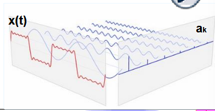
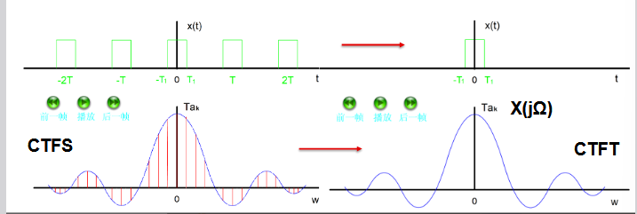
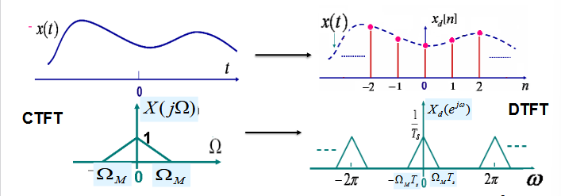
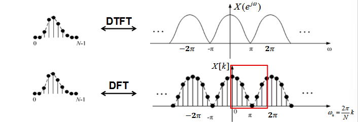
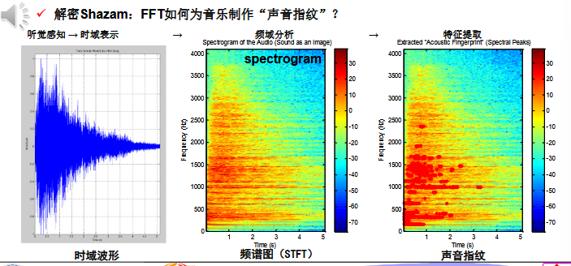
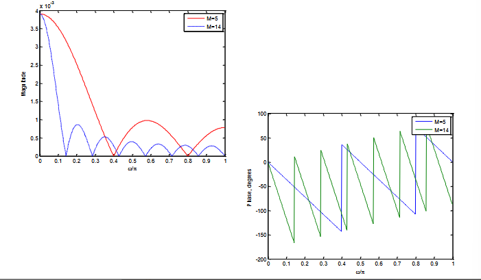
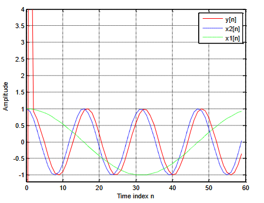

PPT例题很重要 #
🌟 欢迎来到第四讲！ #
本讲主要介绍傅里叶变换的家族史，从连续到离散，从理论到计算的伟大旅程。
📝 本讲主要内容 #
- 回顾祖辈 (CTFS and CTFT) 👴
- 认识父辈 (DTFT) 👨🦱
- 迎接王者 (DFT/FFT) 👑
- 前沿实战 (Applications) 🚀
- 傅里叶变换及性质 ✨
- 离散时间 LTI 系统的频率响应 🎶
🔍 变换缩写 #
- CTFS: 连续时间傅里叶级数 (Continuous-Time Fourier Series)
- CTFT: 连续时间傅里叶变换 (Continuous-Time Fourier Transform)
- DTFT: 离散时间傅里叶变换 (Discrete-Time Fourier Transform)
- DFT: 离散傅里叶变换 (Discrete Fourier Transform)
- FFT: 快速傅里叶变换 (Fast Fourier Transform)
一、傅里叶变换的"四世同堂"：从理论到计算的演进 🔄 #
傅里叶变换家族的发展，本质是从连续模拟世界走向离散数字世界，解决"信号可分析"到"信号可计算"的核心问题。四者的时域/频域特性、核心作用及局限如下：
1.1 祖辈1：连续时间傅里叶级数（CTFS）——周期信号的基石 #
- 核心定位：分析连续、周期模拟信号的频率成分，是傅里叶家族的起源。
- 时域/频域特性：
- 时域：连续、周期（周期$T$，角频率$\omega\_0 = 2\pi/T$）；
- 频域：离散、非周期（仅含$\omega = k\omega\_0$的谐波分量，$k$为整数）。
- 变换对：
正变换（时域→频域，求谐波系数$a\_k$）：
$$a_k = \frac{1}{T} \int_{T} x(t) e^{-jk\omega_0 t} dt$$
逆变换（频域→时域，重构周期信号）：
$$x(t) = \sum_{k=-\infty}^{\infty} a_k e^{jk\omega_0 t}$$ - 优势：首次将周期信号分解为正弦/复指数分量，奠定频率分析基础。
- 局限：仅适用于周期信号，无法处理单个、孤立的非周期事件（如单次语音、单个图像）。
【CTFS时域频域对比图（上：连续周期时域波形$x(t)$；下：离散非周期频域谱线$a\_k$）】

1.2 祖辈2：连续时间傅里叶变换（CTFT）——非周期信号的突破 #
- 核心定位：突破周期限制，分析连续、非周期模拟信号的频率成分。
- 思想飞跃：将非周期信号视为"周期$T \to \infty$的周期信号"，此时$\omega\_0 = 2\pi/T \to 0$，离散谱线连成连续频谱。
- 时域/频域特性：
- 时域：连续、非周期；
- 频域：连续、非周期（覆盖$\Omega \in (-\infty,+\infty)$，$\Omega$为模拟角频率，单位：rad/s）。
- 变换对：
正变换（时域→频域）：
$$X_a(j\Omega) = \int_{-\infty}^{\infty} x_a(t) e^{-j\Omega t} dt$$
逆变换（频域→时域）：
$$x_a(t) = \frac{1}{2\pi} \int_{-\infty}^{\infty} X_a(j\Omega) e^{j\Omega t} d\Omega$$ - 优势：可分析非周期信号（如单次脉冲、语音片段），扩展了频率分析的适用范围。
- 局限：时域和频域均为连续形式，无法用数字计算机处理（计算机仅能处理离散、有限长数据）。
【CTFT时域频域对比图（上：连续非周期时域波形$x\_a(t)$；下：连续非周期频域频谱$X\_a(j\Omega)$）】

1.3 父辈：离散时间傅里叶变换（DTFT）——数字世界的初探 #
- 核心定位：进入数字领域，分析离散、非周期数字序列的频率成分。
- 时域/频域特性：
- 时域：离散、非周期（序列$x[n]$，$n$为整数）；
- 频域：连续、周期（周期$2\pi$，$\omega$为数字角频率，单位：rad/sample）。
- 周期性来源：时域采样导致频域周期延拓（采样定理的延伸）。
- 变换对：
正变换（时域→频域）：
$$X(e^{j\omega}) = \sum_{n=-\infty}^{\infty} x[n] e^{-j\omega n}$$
逆变换（频域→时域）：
$$x[n] = \frac{1}{2\pi} \int_{-\pi}^{\pi} X(e^{j\omega}) e^{j\omega n} d\omega$$ - 优势：适配数字序列输入，为数字信号的频域分析提供理论工具。
- 局限：频域仍为连续形式（$\omega$覆盖$[-\pi,\pi]$），计算机无法直接存储和计算（需无穷多采样点描述频谱）。
【DTFT时域频域对比图（上：离散非周期时域序列$x[n]$；下：连续周期频域频谱$X(e^{j\omega})$，标注周期$2\pi$）】

1.4 王者：离散傅里叶变换（DFT/FFT）——工程计算的终极武器 #
- 核心定位：解决"频域离散化"问题，实现双离散、有限长信号的频率计算，是工程应用的核心工具。
- 关键突破：对DTFT的连续频谱进行"等间隔采样"（采样点$k=0,1,\dots,N-1$，$N$为序列长度），得到离散频谱$X[k]$。
- 时域/频域特性：
- 时域：离散、有限长（$x[n]$，$0 \leq n \leq N-1$）；
- 频域：离散、有限长（$X[k]$，$0 \leq k \leq N-1$），隐含周期$N$。
- 核心价值：
- DFT：理论基础，将频域从连续变为离散，使计算机可处理；
- FFT：DFT的快速算法（如基2FFT），将计算复杂度从$O(N^2)$降至$O(N\log N)$，实现实时频谱分析（如手机、雷达的实时信号处理）。
【DFT与DTFT关系图（上：DTFT连续周期频谱$X(e^{j\omega})$；下：DFT离散频谱$X[k]$，标注采样点$\omega\_k = 2\pi k/N$）】

1.5 前沿实战：FFT的典型应用——Shazam"听歌识曲" 🎵 #
- 核心挑战：用户录制的音频含噪声、仅为歌曲片段，需精准匹配数据库中的歌曲。
- FFT的作用（“声音指纹"生成）：
- 时域→频域：对录制音频做短时傅里叶变换（STFT，基于FFT），生成频谱图（Spectrogram）（时间-频率-幅度的三维图）；
- 特征提取：从频谱图中提取"频谱峰值”（突出高频能量点），形成独特的"声音指纹"；
- 匹配检索：将"声音指纹"与数据库中的歌曲指纹对比，找到最相似的匹配结果。
【Shazam技术流程图（左：时域音频波形；中：STFT生成的频谱图；右：提取的声音指纹（频谱峰值标记））】

二、傅里叶变换基础：核心概念与定理 📖 #
2.1 为什么需要傅里叶变换？——历史与核心价值 #
- 历史起源：1807年，法国数学家傅里叶（Fourier）在《热的传播》中提出"任一函数可展为三角函数级数"，奠定傅里叶分析基础。
- 核心价值（现代视角）：
- 频率成分分析：将时域信号分解为不同频率的正弦/复指数分量，直观看到信号的"频率构成"（如语音中的基频、图像中的低频轮廓/高频细节）；
- LTI系统适配：正弦/复指数信号是LTI系统的本征函数——输入为$e^{j\omega n}$时，输出仅为$H(e^{j\omega})e^{j\omega n}$（$H(e^{j\omega})$为系统频率响应），简化系统响应计算；
- 卷积定理：时域卷积→频域乘积（$x[n]*h[n] \leftrightarrow X(e^{j\omega})H(e^{j\omega})$），将复杂的卷积运算转化为简单的乘法；
- 高效计算：DFT的快速算法（FFT）使频域分析可实时实现，推动工程应用（如通信、雷达、音频处理）。
2.2 傅里叶变换的复数表示（CTFT/DTFT） #
傅里叶变换的结果为复数，需通过实部、虚部或幅度、相位描述：
（1）CTFT的复数表示 #
$$X_a(j\Omega) = X_{re}(j\Omega) + jX_{im}(j\Omega) = |X_a(j\Omega)| e^{j\theta_a(\Omega)}$$- $X\_{re}(j\Omega)$：频谱实部；$X\_{im}(j\Omega)$：频谱虚部；
- $|X\_a(j\Omega)|$：幅度谱（反映各频率成分的强度）；
- $\theta\_a(\Omega) = \arg\\{X\_a(j\Omega)\\}$：相位谱（反映各频率成分的时延）。
（2）DTFT的复数表示 #
$$X(e^{j\omega}) = X_{re}(e^{j\omega}) + jX_{im}(e^{j\omega}) = |X(e^{j\omega})| e^{j\theta(\omega)}$$- 符号含义与CTFT一致，仅需将$\Omega$替换为$\omega$（数字角频率）。
2.3 傅里叶变换的收敛条件 #
只有满足收敛条件，傅里叶变换才存在。CTFT与DTFT的收敛条件不同：
（1）CTFT收敛条件：Dirichlet条件 #
- 绝对可积：$\int\_{-\infty}^{\infty} |x\_a(t)| dt < \infty$（核心条件）；
- 有限区间内，信号有有限个不连续点和有限个极值点；
- 有限区间内，不连续点为第一类间断点（左右极限存在且有限）。
（2）DTFT收敛条件：一致收敛与均方收敛 #
| 收敛类型 | 定义 | 适用场景 |
|---|---|---|
| 一致收敛 | $\lim\_{K \to \infty} \max\_{\omega}X(e^{j\omega}) - X\_K(e^{j\omega})= 0$（$X\_K(e^{j\omega}) = \sum\_{n=-K}^K x[n]e^{-j\omega n}$） | 序列绝对可和 （$\sum\_{n=-\infty}^{\infty}x[n]< \infty$），如$x[n] = \alpha^n u[n]$（$\alpha< 1$） |
| 均方收敛 | $\lim\_{K \to \infty} \int\_{-\pi}^{\pi}X(e^{j\omega}) - X\_K(e^{j\omega})^2 d\omega = 0$ | 序列能量有限但不绝对可和，如理想低通滤波器的单位脉冲响应$h\_{LP}[n] = \frac{\sin\omega\_c n}{\pi n}$ |
- 关键结论：绝对可和是DTFT一致收敛的充分条件，能量有限是DTFT均方收敛的充分条件。
2.4 能量密度谱：Parseval定理与维纳-辛欣定理 #
能量密度谱（Spectral Density）描述信号能量在频域的分布，是连接时域能量与频域能量的核心工具。
（1）Parseval定理（能量守恒） #
-
连续时间信号（CTFT）：
时域总能量 = 频域总能量（需除以$2\pi$，因$\Omega$为连续频率）：
$$\varepsilon_x = \int_{-\infty}^{\infty} |x_a(t)|^2 dt = \frac{1}{2\pi} \int_{-\infty}^{\infty} |X_a(j\Omega)|^2 d\Omega$$ -
离散时间序列（DTFT）：
时域总能量 = 频域总能量（需除以$2\pi$，因$\omega$周期为$2\pi$）：
$$\varepsilon_g = \sum_{n=-\infty}^{\infty} |g[n]|^2 = \frac{1}{2\pi} \int_{-\pi}^{\pi} |G(e^{j\omega})|^2 d\omega$$ -
物理意义：信号的能量在时域和频域中守恒，仅分布形式不同。
（2）维纳-辛欣定理（自相关与能量谱的关系） #
- 核心结论：信号的自相关函数的傅里叶变换，等于其能量密度谱。
- 离散时间序列：$S\_{gg}(e^{j\omega}) = \text{DTFT}\\{r\_{gg}[l]\\} = \sum\_{l=-\infty}^{\infty} r\_{gg}[l] e^{-j\omega l}$；
- 扩展（互能量谱）：$S\_{gh}(e^{j\omega}) = \text{DTFT}\\{r\_{gh}[l]\\} = G(e^{j\omega}) H^*(e^{j\omega})$（$H^*$为$H$的共轭）。
- 应用：无法直接计算信号频谱时，可通过自相关函数间接求能量谱（如随机信号的谱估计）。
2.5 带限信号分类（连续/离散时间） #
带限信号指"频谱仅在有限频率范围内非零"的信号，按能量集中的频段可分为低通、高通、带通三类：
（1）连续时间带限信号（$\Omega$：模拟角频率，单位rad/s） #
| 类型 | 频谱范围 | 带宽定义 |
|---|---|---|
| 低通信号 | $0 \leq\Omega\leq \Omega\_p$ | $\Omega\_p$（最高频率） |
| 高通信号 | $\Omega\_p \leq\Omega< \infty$ | $\infty - \Omega\_p$ |
| 带通信号 | $\Omega\_L \leq\Omega\leq \Omega\_H$ | $\Omega\_H - \Omega\_L$（带宽） |
（2）离散时间带限信号（$\omega$：数字角频率，单位rad/sample，范围$[-\pi,\pi]$） #
| 类型 | 频谱范围 | 带宽定义 |
|---|---|---|
| 低通信号 | $0 \leq\omega\leq \omega\_p$ | $\omega\_p$ |
| 高通信号 | $\omega\_p \leq\omega< \pi$ | $\pi - \omega\_p$ |
| 带通信号 | $\omega\_L \leq\omega\leq \omega\_H$ | $\omega\_H - \omega\_L$ |
- 关键提醒：离散时间信号的频域天然周期为$2\pi$，故带宽最大为$\pi$（对应采样率的一半，即Nyquist频率）。
三、DTFT的核心性质：从数学到应用 📊 #
DTFT的性质是频域分析的"工具箱"，尤其卷积定理、时移/频移性质是LTI系统分析的核心。
3.1 DTFT逆变换的证明 #
需验证逆变换公式能否从$X(e^{j\omega})$重构$x[n]$：
$$x[n] = \frac{1}{2\pi} \int_{-\pi}^{\pi} X(e^{j\omega}) e^{j\omega n} d\omega$$
证明步骤：
- 代入DTFT正变换公式：
$$x[n] = \frac{1}{2\pi} \int_{-\pi}^{\pi} \left( \sum_{l=-\infty}^{\infty} x[l] e^{-j\omega l} \right) e^{j\omega n} d\omega$$ - 交换求和与积分顺序（满足收敛条件时可交换）：
$$x[n] = \sum_{l=-\infty}^{\infty} x[l] \cdot \frac{1}{2\pi} \int_{-\pi}^{\pi} e^{j\omega(n-l)} d\omega$$ - 计算积分项（利用$\int\_{-\pi}^{\pi} e^{j\omega k} d\omega = 2\pi \delta[k]$，$\delta[k]$为单位采样序列）：
$$\frac{1}{2\pi} \int_{-\pi}^{\pi} e^{j\omega(n-l)} d\omega = \delta[n-l]$$ - 利用$\sum\_{l=-\infty}^{\infty} x[l] \delta[n-l] = x[n]$，得证。
3.2 常用DTFT变换对（表格整理） #
| 离散序列 $x[n]$ | DTFT $X(e^{j\omega})$ | 备注 |
|---|---|---|
| 单位采样序列 $\delta[n]$ | $1$ | 含所有频率成分，幅度相位均相同 |
| 单位阶跃序列 $u[n]$ | $\frac{1}{1-e^{-j\omega}} + \sum\_{k=-\infty}^{\infty} \pi \delta(\omega + 2\pi k)$ | 含直流分量（冲激项） |
| 指数序列 $\alpha^n u[n]$（$\alpha< 1$） | $\frac{1}{1 - \alpha e^{-j\omega}}$ | 绝对可和，一致收敛 |
| 复指数序列 $e^{j\omega\_0 n}$ | $\sum\_{k=-\infty}^{\infty} 2\pi \delta(\omega - \omega\_0 + 2\pi k)$ | 仅含$\omega = \omega\_0 + 2\pi k$频率 |
| 理想低通脉冲响应 $h\_{LP}[n] = \frac{\sin\omega\_c n}{\pi n}$ | $H\_{LP}(e^{j\omega}) = \begin{cases} 1 &\omega\leq \omega\_c \\\ 0 & \omega\_c <\omega\leq \pi \end{cases}$ | 能量有限，均方收敛 |
3.3 DTFT的基本性质（表格整理） #
设$\text{DTFT}\\{g[n]\\} = G(e^{j\omega})$，$\text{DTFT}\\{h[n]\\} = H(e^{j\omega})$，则：
| 性质 | 离散序列 | DTFT | 核心应用 |
|---|---|---|---|
| 线性 | $\alpha g[n] + \beta h[n]$ | $\alpha G(e^{j\omega}) + \beta H(e^{j\omega})$ | 叠加信号的频域分析 |
| 时移 | $g[n - n\_0]$ | $e^{-j\omega n\_0} G(e^{j\omega})$ | 信号时延的频域影响（相位线性变化） |
| 频移 | $e^{j\omega\_0 n} g[n]$ | $G(e^{j(\omega - \omega\_0)})$ | 信号调制（如将低频信号移至高频） |
| 频域微分 | $n g[n]$ | $j \frac{dG(e^{j\omega})}{d\omega}$ | 分析信号的频率变化率 |
| 卷积定理 | $g[n] * h[n]$（时域卷积） | $G(e^{j\omega}) H(e^{j\omega})$（频域乘积） | LTI系统响应计算（$Y = XH$） |
| 相乘定理 | $g[n] \cdot h[n]$（时域相乘） | $\frac{1}{2\pi} \int\_{-\pi}^{\pi} G(e^{j\theta}) H(e^{j(\omega - \theta)}) d\theta$（频域卷积） | 信号加窗（时域乘窗→频域卷积） |
| Parseval公式 | $\sum\_{n=-\infty}^{\infty} g[n] h^*[n]$ | $\frac{1}{2\pi} \int\_{-\pi}^{\pi} G(e^{j\omega}) H^*(e^{j\omega}) d\omega$ | 时域能量/相关性→频域计算 |
- 重点强调：卷积定理是LTI系统频域分析的"灵魂"——无需时域卷积，只需频域乘积即可求系统输出。
3.4 复序列与实序列的DTFT对称关系 #
对称关系可简化频谱计算（如实序列的频谱只需计算正频率部分）：
（1）复序列的对称关系 #
| 离散序列 $x[n]$ | DTFT $X(e^{j\omega})$ |
|---|---|
| $x[n]$ | $X(e^{j\omega})$ |
| $x[-n]$ | $X(e^{-j\omega})$ |
| $\text{Re}\\{x[n]\\}$（实部） | $X\_{cs}(e^{j\omega}) = \frac{1}{2}(X(e^{j\omega}) + X^*(e^{-j\omega}))$（共轭对称部分） |
| $j\text{Im}\\{x[n]\\}$（虚部×j） | $X\_{ca}(e^{j\omega}) = \frac{1}{2}(X(e^{j\omega}) - X^*(e^{-j\omega}))$（共轭反对称部分） |
| $x\_{cs}[n]$（共轭对称序列） | $\text{Re}\\{X(e^{j\omega})\\}$（实部） |
| $x\_{ca}[n]$（共轭反对称序列） | $j\text{Im}\\{X(e^{j\omega})\\}$（虚部×j） |
（2）实序列的对称关系（复序列的特例，$x^*[n] = x[n]$） #
| 离散序列 $x[n]$ | DTFT $X(e^{j\omega})$ | 关键结论 |
|---|---|---|
| $x[n]$（实序列） | $X(e^{j\omega}) = X\_{re}(e^{j\omega}) + jX\_{im}(e^{j\omega})$ | - |
| $x\_{ev}[n]$（偶序列） | $X\_{re}(e^{j\omega})$（实部） | 偶序列对应实频谱 |
| $x\_{od}[n]$（奇序列） | $jX\_{im}(e^{j\omega})$（虚部×j） | 奇序列对应虚频谱 |
| - | $X(e^{j\omega}) = X^*(e^{-j\omega})$ | 幅度谱偶对称，相位谱奇对称 |
| - | $X(e^{j\omega})=X(e^{-j\omega})$ | 幅度谱：$\omega$与$-\omega$相等 |
| - | $\arg\\{X(e^{j\omega})\\} = -\arg\\{X(e^{-j\omega})\\}$ | 相位谱：$\omega$与$-\omega$相反 |
3.5 DTFT的周期性（证明与意义） #
- 核心结论：任意序列的DTFT是周期为$2\pi$的连续函数，即$X(e^{j(\omega + 2\pi k)}) = X(e^{j\omega})$（$k$为整数）。
证明：
代入DTFT正变换公式：
$$X(e^{j(\omega + 2\pi k)}) = \sum_{n=-\infty}^{\infty} x[n] e^{-j(\omega + 2\pi k)n} = \sum_{n=-\infty}^{\infty} x[n] e^{-j\omega n} \cdot e^{-j2\pi k n}$$
因$e^{-j2\pi k n} = \cos(2\pi k n) - j\sin(2\pi k n) = 1$（$k,n$为整数），故：
$$X(e^{j(\omega + 2\pi k)}) = \sum_{n=-\infty}^{\infty} x[n] e^{-j\omega n} = X(e^{j\omega})$$
- 物理意义：离散时间信号的频域具有"周期性重复"特性，只需分析一个周期（如$[-\pi,\pi]$或$[0,2\pi]$）即可掌握全部频域信息。
3.6 例题：DTFT逆变换求解与性质应用 #
例题：求$X(e^{j\omega}) = \sum\_{k=-\infty}^{\infty} \delta(\omega + 2k\pi) + \frac{-\alpha e^{-j\omega}}{(1 - \alpha e^{-j\omega})^2}$（$|\alpha| < 1$）的逆DTFT。
解题步骤：
- 拆分$X(e^{j\omega})$为两部分：$X(e^{j\omega}) = X\_1(e^{j\omega}) + X\_2(e^{j\omega})$，其中：
- $X\_1(e^{j\omega}) = \sum\_{k=-\infty}^{\infty} \delta(\omega + 2k\pi)$（冲激序列）；
- $X\_2(e^{j\omega}) = \frac{-\alpha e^{-j\omega}}{(1 - \alpha e^{-j\omega})^2}$（有理函数）。
- 求$X\_1(e^{j\omega})$的逆DTFT：
由常用变换对，$\text{DTFT}^{-1}\\{\sum\_{k=-\infty}^{\infty} \delta(\omega + 2k\pi)\\} = \delta[n]$（单位采样序列）。 - 求$X\_2(e^{j\omega})$的逆DTFT：
利用"频域微分性质"——已知$\text{DTFT}\\{\alpha^n u[n]\\} = \frac{1}{1 - \alpha e^{-j\omega}}$，对其两边关于$\omega$求导：
$$\frac{d}{d\omega} \left( \frac{1}{1 - \alpha e^{-j\omega}} \right) = \frac{-j\alpha e^{-j\omega}}{(1 - \alpha e^{-j\omega})^2}$$
对比$X\_2(e^{j\omega})$：
$$X_2(e^{j\omega}) = \frac{-\alpha e^{-j\omega}}{(1 - \alpha e^{-j\omega})^2} = j \cdot \frac{d}{d\omega} \left( \frac{1}{1 - \alpha e^{-j\omega}} \right)$$
由频域微分性质（$\text{DTFT}\\{n g[n]\\} = j \frac{dG(e^{j\omega})}{d\omega}$），得：
$$\text{DTFT}^{-1}\{X_2(e^{j\omega})\} = n \cdot \alpha^n u[n]$$ - 叠加两部分结果：
$$x[n] = \delta[n] + n \alpha^n u[n]$$
四、离散时间LTI系统的频率响应 🚀 #
LTI系统的频率响应是"频域分析系统特性"的核心工具，描述系统对不同频率信号的"放大/衰减"和"时延"作用。
4.1 频率响应的定义与物理意义 #
- 定义：LTI系统的单位脉冲响应$h[n]$的DTFT，记为$H(e^{j\omega})$：
$$H(e^{j\omega}) = \text{DTFT}\{h[n]\} = \sum_{n=-\infty}^{\infty} h[n] e^{-j\omega n}$$ - 物理意义：当输入为复指数序列$x[n] = e^{j\omega n}$ 时，系统输出为：
$$y[n] = x[n] * h[n] = \sum_{k=-\infty}^{\infty} h[k] e^{j\omega(n - k)} = H(e^{j\omega}) e^{j\omega n}$$
即输出为"相同频率的复指数序列 × 复常数$H(e^{j\omega})$"——$H(e^{j\omega})$的幅度表示"频率$\omega$的放大倍数"，相位表示"频率$\omega$的时延"。 - 核心公式（频域输入输出关系）：
由卷积定理，$Y(e^{j\omega}) = X(e^{j\omega}) H(e^{j\omega})$（$Y$为输出频谱，$X$为输入频谱）。
4.2 幅频特性、相频特性与增益/衰减函数 #
$H(e^{j\omega})$为复数，可分解为幅度响应和相位响应：
$$H(e^{j\omega}) = |H(e^{j\omega})| e^{j\theta(\omega)}$$
| 参数 | 定义 | 物理意义 |
|---|---|---|
| 幅度响应 $H(e^{j\omega})$ | $H(e^{j\omega})$的模 | 系统对频率$\omega$信号的"放大/衰减倍数" |
| 相位响应 $\theta(\omega)$ | $H(e^{j\omega})$的辐角（$\arg\\{H(e^{j\omega})\\}$） | 系统对频率$\omega$信号的"额外时延"（单位：rad） |
| 增益函数 $G(\omega)$ | $G(\omega) = 20\log\_{10}H(e^{j\omega})$（单位：dB） | 对数域的放大倍数（便于观察大幅值范围） |
| 衰减函数 $A(\omega)$ | $A(\omega) = -G(\omega) = -20\log\_{10}H(e^{j\omega})$（单位：dB） | 对数域的衰减倍数 |
4.3 FIR与IIR系统的频率响应对比 #
| 系统类型 | 频率响应公式 | 稳定性（BIBO） | 因果性（默认） | 实现特点 |
|---|---|---|---|---|
| FIR系统 | $H(e^{j\omega}) = \sum\_{n=N\_1}^{N\_2} h[n] e^{-j\omega n}$（有限项求和） | 稳定（$h[n]$有限长，绝对可和） | 因果（$h[n] = 0$，$n < 0$） | 无反馈，易实现线性相位 |
| IIR系统 | $H(e^{j\omega}) = \frac{\sum\_{n=0}^M a\_n e^{-j\omega n}}{\sum\_{n=0}^N b\_n e^{-j\omega n}}$（有理函数） | 需满足极点在单位圆内 | 因果（分母系数决定） | 有反馈，计算量小，但难实现线性相位 |
- MATLAB实现函数：
- 计算频率响应：
[H, w] = freqz(b, a, N)（$b$为分子系数，$a$为分母系数，$N$为采样点数）； - 计算单位脉冲响应：
h = impz(b, a, N)； - FIR系统特例：$a = [1]$，故
freqz(h, 1, N)等价于freqz(b, 1, N)。
- 计算频率响应：
4.4 MATLAB实战：滑动平均滤波器的频率响应 #
示例：分析$M=5$和$M=14$的滑动平均滤波器（FIR系统）的幅频和相频特性。
MATLAB代码： #
% 1. 生成滤波器系数（滑动平均：每个系数为1/M）
h1 = ones(1, 5) / 5; % M=5的滑动平均滤波器
h2 = ones(1, 14) / 14; % M=14的滑动平均滤波器
% 2. 计算频率响应（256个采样点，覆盖[0, pi]）
[N_points, w] = freqz(h1, 1, 256); % h1的频率响应
[H2, w] = freqz(h2, 1, 256); % h2的频率响应
% 3. 计算幅频特性（幅度）和相频特性（角度转度数）
mag1 = abs(H1); % M=5的幅度响应
mag2 = abs(H2); % M=14的幅度响应
phase1 = angle(H1) * 180 / pi; % M=5的相位响应（度）
phase2 = angle(H2) * 180 / pi; % M=14的相位响应（度）
% 4. 绘图
figure;
% 幅频特性图
subplot(2,1,1);
plot(w/pi, mag1, 'r-', w/pi, mag2, 'b--');
xlabel('\omega/\pi'); ylabel('Magnitude');
legend('M=5', 'M=14'); title('滑动平均滤波器幅频特性');
% 相频特性图
subplot(2,1,2);
plot(w/pi, phase1, 'r-', w/pi, phase2, 'b--');
xlabel('\omega/\pi'); ylabel('Phase (degrees)');
legend('M=5', 'M=14'); title('滑动平均滤波器相频特性');
结果分析： #
- 幅频特性：$M$越大，低通滤波效果越好（主瓣越窄，衰减越快），但过渡带越宽；
- 相频特性：均为线性相位（因$h[n]$对称），时延随$\omega$线性增加。
【滑动平均滤波器幅频/相频特性图（上：幅频特性，$M=14$的主瓣更窄；下：相频特性，均为线性下降）】

4.5 实战：简单FIR滤波器设计（通带/阻带控制） #
需求：设计长度为3的实对称FIR滤波器，允许$\omega=0.4$ rad/sample的信号通过（通带），抑制$\omega=0.1$ rad/sample的信号（阻带）。
设计步骤： #
- 设FIR滤波器的频率响应（长度3，系数对称$h[0]=h[2]=a$，$h[1]=b$）：
$$H(e^{j\omega}) = a + b e^{-j\omega} + a e^{-j2\omega}$$ - 化简频率响应（利用欧拉公式）：
$$H(e^{j\omega}) = e^{-j\omega} (2a \cos\omega + b)$$
幅度响应：$|H(e^{j\omega})| = |2a \cos\omega + b|$（相位响应为$-\omega$，线性相位）。 - 建立约束方程（通带$\omega=0.4$时$|H|=1$，阻带$\omega=0.1$时$|H|=0$）：
$$\begin{cases} 2a \cos(0.4) + b = 1 \\ 2a \cos(0.1) + b = 0 \end{cases}$$ - 求解系数$a$和$b$：
两式相减得：$2a (\cos0.4 - \cos0.1) = 1 \implies a \approx -1.73$；
代入得：$b \approx 2a \cos0.1 \approx 3.41$。 - 最终滤波器系数：$h[0] = h[2] \approx -1.73$，$h[1] \approx 3.41$。
【滤波器输入输出对比图（上：含$\omega=0.1$和$\omega=0.4$的输入信号；下：滤波后仅$\omega=0.4$的信号保留）】

4.6 相位延迟与群延迟：信号时延分析 #
当输入为正弦信号$x[n] = \cos(\omega\_0 n)$时，输出为：
$$y[n] = |H(e^{j\omega_0})| \cos(\omega_0 n + \theta(\omega_0))$$
时延分为相位延迟（单频率信号的时延）和群延迟（多频率信号的时延）：
| 时延类型 | 定义 | 物理意义 | 理想特性 |
|---|---|---|---|
| 相位延迟 $\tau\_p(\omega\_0)$ | $\tau\_p(\omega\_0) = -\frac{\theta(\omega\_0)}{\omega\_0}$（单位：sample） | 单频率$\omega\_0$信号的"绝对时延" | 常数（无失真） |
| 群延迟 $\tau\_g(\omega)$ | $\tau\_g(\omega) = -\frac{d\theta(\omega)}{d\omega}$（单位：sample） | 多频率信号的"平均时延"（信号包络的时延） | 常数（避免信号失真，如线性相位FIR） |
- MATLAB计算函数：
- 相位延迟：
[phi, w] = phasedelay(b, a, N)； - 群延迟：
[gd, w] = grpdelay(b, a, N)。
- 相位延迟：
- 例题：理想低通滤波器的群延迟为？
答案：A（非零常数）。因理想低通的相位响应$\theta(\omega) = -\omega \tau\_0$（线性相位），故$\tau\_g(\omega) = -\frac{d\theta}{d\omega} = \tau\_0$（常数）。